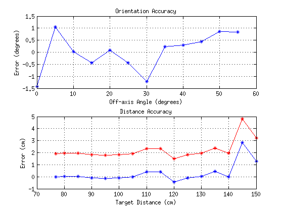

rawDataAngX = importdata('../../tracking_mapping/data/metric/data_image_0_0_770_0-55-5-12');
rawDataZ = importdata('../../tracking_mapping/data/metric/data_image_0_0_800-1500-50-15_0');
subplot(2, 1, 1)
rangeAngX = 0:5:55;
dataAngX = rawDataAngX;
dataAngX(:, 4) = dataAngX(:, 4) + 180;
dataAngX(:, 6) = dataAngX(:, 6) + 90;
groundTruthAngX = zeros(12, 6);
groundTruthAngX(:, 3) = 0.770;
groundTruthAngX(:, 4) = rangeAngX;
plot(rangeAngX, groundTruthAngX(:, 4)-dataAngX(:, 4), '*-')
title('Orientation Accuracy')
xlabel('Off-axis Angle (degrees)')
ylabel('Error (degrees)')
grid on
subplot(2, 1, 2)
dataZ = rawDataZ;
rangeZ = 80:5:150;
groundTruthZ = zeros(15, 6);
rangeZ = [77 rangeZ];
dataZ = [rawDataAngX(1, :); dataZ];
groundTruthZ = [groundTruthAngX(1, :); groundTruthZ];
dataZ(:, 3) = dataZ(:, 3) * 100;
dataZ(:, 4) = dataZ(:, 4) + 180;
dataZ(:, 6) = dataZ(:, 6) + 90;
groundTruthZ(:, 3) = rangeZ;
plot(rangeZ, groundTruthZ(:, 3)-dataZ(:, 3) - (groundTruthZ(1, 3)-dataZ(1, 3)), '*-')
hold on
plot(rangeZ, groundTruthZ(:, 3)-dataZ(:, 3) , '*-r')
title('Distance Accuracy')
xlabel('Target Distance (cm)')
ylabel('Error (cm)')
grid on
